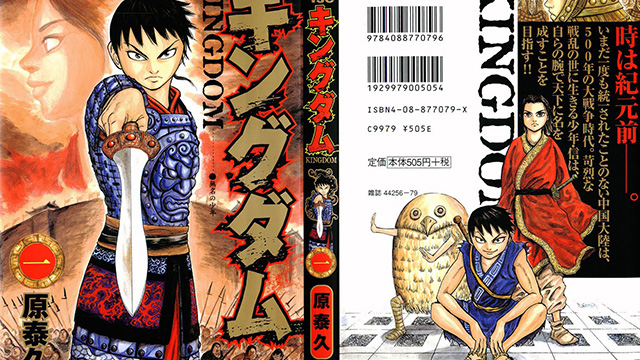

最近堅い話ばかり続いていたので、今回は少し軽めに漫画のお話。
最近読んだ漫画は二つ。一つは現在話題沸騰中の『進撃の巨人』。二つ目が、古代中国を舞台にした歴史ファンタジー（？）『KINGDOM』です。仕事柄、世界史をテーマにした創作物はよく読む方です。元々西洋史をメインで勉強してきたため、知識は西洋史の方があるのですが、創作物となると中国が断然面白い！ なんとなくですが、中国舞台の方が西欧史のそれよりも物語が「しっくり構築されている」観があるのです。それはなぜかと考えてみると、結構深い話になりそうです。

世界の境界線がはっきりしている中国
西欧と比べたとき、中国は「区切り」がはっきりしています。西欧の場合、一つの国というよりも、地域全体が舞台になります。国民国家が誕生する近代以降はさておき、よく創作物のネタになる中世から近世までは国家などあってなきがごとし。王家の領土、貴族の領土、教会の領地が複雑に重なり合い、そこにさらに宗教的な区切りが足されていきます。たとえば現在のドイツにあたる地域を描いたとしても、「中世ドイツを舞台にした」と一言ではいえません。そもそもそこに住む人々にはドイツ人としての自覚などかけらもなかったのですから、我々がドイツに抱くイメージをシンプルに適用することも当然できません。つまり、物語の「範囲」が見えづらいのです。
一方の中国は、ある程度明確に「中華圏」を区切ることができ、その中ではこれもある程度ですが文化を共有した人々が住んでいます。そして、その文化や「中華圏としての自意識」は、現代に至るまで連続しています。わかりやすくいえば、西欧は仕切りも何もない野原でたくさんの人々が殴り合いをしているイメージ。中国はしっかりと作られたリングの中でボクシングが行われている感じです。
KINGDOMに見る「舞台」
さて、冒頭に名前を挙げた『KINGDOM』ですが、もう少し詳しく紹介してみましょう。時代は戦国時代末期、有力な統一王朝だった周が力を弱め、地方が独立状態の「国」として争っていた時代。その「国」の中の一つである「秦」の王である「政」が主人公の少年とともに他国と戦い、中国を統一していく物語です。
この秦王の政、実は中学校で習う「始皇帝」なんですね。万里の長城を作った皇帝として有名です。中国は伝統的に歴史を記録するのが大好きですから、今から2000年以上前の出来事もしっかり歴史書に残っています。特に始皇帝の中国統一は大事件としてしっかりと記録されて広まっているため、大きな流れ自体は非常に有名です。ただ、その歴史書の書き方が現代でいうところの「年表」方式であるが故に、創作の余地が生まれます。出来事が説明もなく延々と箇条書きにされている年表ですから、当然ある出来事が起こった「理由」やそれに関わった「人物」については至極シンプルに書かれているのみ。そこで、歴史書には一行分しか書かれていない出来事の中身を思いっきり創作し、うまくつなぎ合わせて物語にしたのがこのKINGDOMです。
このように虚実入り交じった長編ですから、話は結構複雑です。大きな流れだけを見ても、様々な国が同盟と離反を繰り返し、勝ったり負けたり、領土を取ったり取られたりの連続で、徐々に秦が力を増していくのですから、そこに「歴史書に書かれていない部分」の創作を足せば、より話はこんがらがっていきます。にもかかわらず、意外とスッと頭に入っていくのは、物語の「プレイヤー」となる「国」と、その「国」が戦う舞台である「中国」という枠組みがしっかりしているためでしょう。読者は神の視点からコップの中の嵐を眺めるように物語を見て、状況を整理できるわけです。
これがヨーロッパだとすごいことになります。たとえば、主人公はフランスの貴族でありながらイギリスの王に即位し、フランス王と戦っているけれども、実は血筋の上ではイタリアともつながっていて、スペインの一部は一族の領土で……。視点があちこちに飛んでしまい、もはやどこを見てよいのかもわかりません。
そう考えてみると、改めて中国ってスゴイ。何千年にもわたってあの巨大な領域が一つの「文明」でまとまっていることに驚異を感じます。
そんなわけで、「複雑だけど意外とさっぱり」なKINGDOM。歴史好き、アクション好き、ファンタジー好きの皆さんにお勧めです。是非読んでみてくださいね。
画像出典:atsutomo.blog.jp